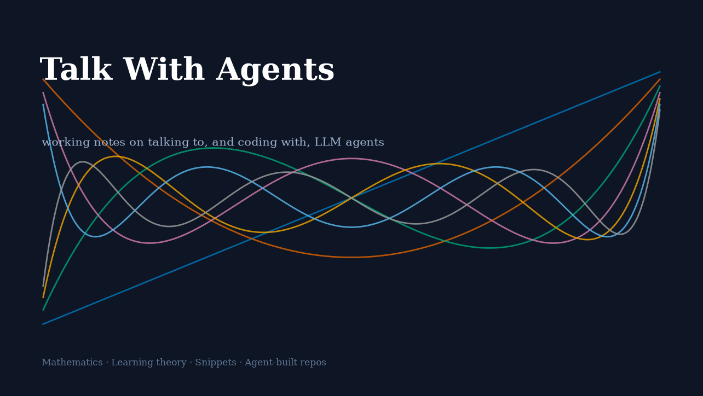
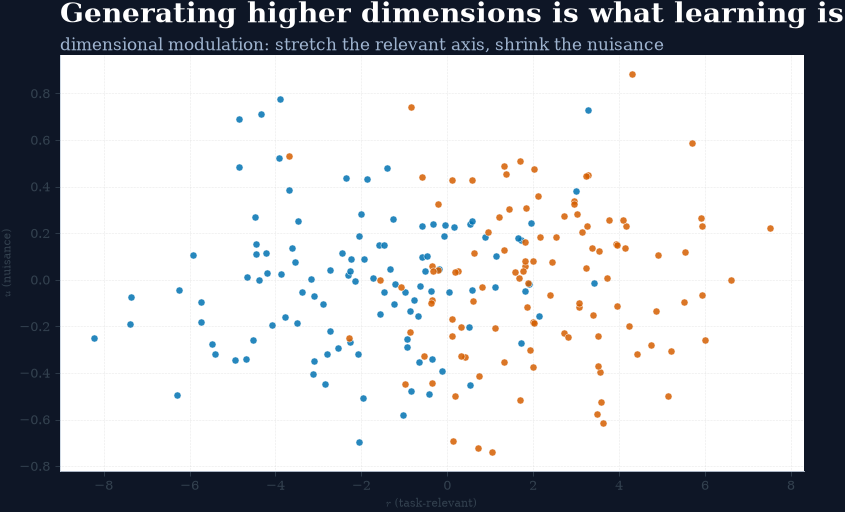

Talk With Agents
Talk With Agents
Talking With Agents · 与 Agent 对谈
Coding With Agents · 与 Agent 共码
关于与约定 · About & Conventions
学习理论（生物学基础） · Learning Theory
与 Agent 讨论学习的生物学基础：表征维度、突触可塑性、认知地图与海马体的空间表征。
一句话立场：
学习不是信息的堆积，而是表征空间的结构性变化
——从低维到高维的「生成」。

从隐喻母本到有向图语料：主人一天下的三道谕
2 分钟
外部模型母本《高级隐喻结构研究探讨》入册审查 → dag06 有向图语料 v0（行序即课程）→ 十六件引文 arXiv 实测查账（13 中 / 2 查无）→ 母本三存入 vault。朱批判词「顺序是最贫的一维」在这一天定谳。
2026年9月26日
把「葡萄爬架子」铸成训练语料：三层设计与课程顺序
3 分钟
同一对源域-目标域文字，如何设计成 instruction / 多轮对话 / 对比强化三套语料；多源域（豆角苦瓜猕猴桃）扩展为何能逼出结构归纳；训练效果如何三层检测（学会了吗/真懂了吗/有洞见吗）。
2026年9月26日
PB20 撕图实验：判词从朱批到离架的七小时
2 分钟
「顺序是最贫的一维」定谳当日，Agent 与主人把判词变成可证伪实验：四虚构袋（杂货单/蓝月年表/曜光制程链/双链跨边）× 有序/撕图 × 三种子 = 24 训，Kaggle 满血 30h 窗口内完成冻判据、铸袋、装弹、发射、回收。
2026年9月26日
「结构」一词为何突然变多：命名扩散期与现实自查
1 分钟
一个概念被命名之后迅速殖民整个话语空间——图式激活、词汇启动与框架重构三重机制；以及主人自设的防幻觉闸门：先查有没有人做过，有支撑就推进，没支撑就退回审逻辑。
2026年9月26日
探针：从「陂」站归属语料到概念空间盲区检测系统
6 分钟
打乱即消融：NBA 选秀语料打乱重训后 LoRA 更新矩阵近正交的自测方法论；「广州的黄陂南路站」式归属错配语料设计；「大图→长江以南→广东→东莞→带大字→大岭山」六层探针升格为 CSSD 结构断裂检测系统。
2026年9月26日
高级隐喻的学术地图：A 结构与 B 结构的相似性谁研究过
1 分钟
从 Gentner 结构映射理论到 Lakoff 结构隐喻、Hofstadter 类比核心论与 Gärdenfors 概念空间：所谓「比隐喻更高级」的表达，实为认知科学六十年主航道。
2026年9月26日
清晰边界、理论谱系与有向图的第三维
3 分钟
植物分类学为何是理想的脚手架：概念空间的凸包、低曲率与认知负荷；维果斯基理论谱系本身即一次攀藤生长；而「边的方向携带依赖」把语料从内容×顺序的二维抬进第三维。
2026年9月26日
山中伸弥的贝叶斯修剪与 PGM 隐藏层
4 分钟
24→10→4 因子不是成功学，是一部活的贝叶斯更新史；树状扩展与链式收敛两种有向图式合成训练样本；概率图模型（PGM）是把「结构即智能」落地的数学桥——而它在今日 LLM 训练流程中被整个埋进参数深处。
2026年9月26日

从低维到高维的「生成」过程，就是人类的学习机理
一次把表征维度、认知地图与反向转移串起来的对谈
1 分钟
Agent 综合神经科学与认知心理学证据回答：类别学习如何拉伸表征空间、高维表征与学习效率的关系、认知地图的扩张，以及从习惯学习（低维）到概念学习（高维）的发展性转变。
2026年9月6日
无匹配项
回到顶部
版权
CC BY 4.0 — text and figures · MIT — code snippets